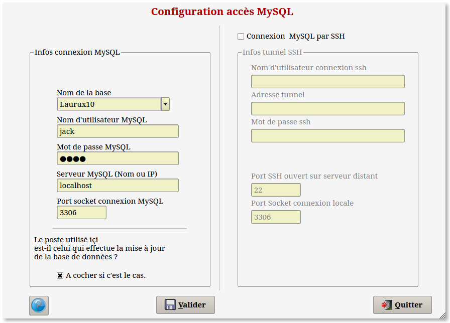

Installation
- Laurux.tar.gz sous /home/votrenomutilisateur. Ceci va créer un
nouveau répertoire nommé Laurux ou Laurux2 ou Laurux3 selon que vous
décompactez la comptabilité seule ou la comptabilité associée à la
facturation ou enfin la facturation seule.
- Ecran.tar.gz sous /home/votrenomutilisateur/Laurux. Ceci va copier les fichiers nécessaires à la documentation.
- Lorsque tout est est installé, aller
dans une console et se logger en root.
- Lancer mysql.
- Créer une base.
- Ex : CREATE DATABASE Laurux; ( Attention , une commande sql se
termine par un ; )
- Créer un utilisateur ayant tous les droits.
- Ex : GRANT ALL ON *.* to votrenomutilisateur@localhost IDENTIFIED
BY 'motdepasse'; ( Attention à bien mettre les apostrophes avant et après votre mot de passe )
- Pour vérifier votre création: Sortir de
root ( CTRL + D ou exit ) puis lancer mysql en tapant la commande
suivante .
- Ex : mysql -h localhost -u votrenomutilisateur -p; Après
validation saisir le mot de passe. Si tout est bien crée vous
accederez au prompt mysql.
- Testez vos droits en créant une base.
- Ex : CREATE DATABASE nomdelabase; Si tout est OK supprimez la
base en tapant DROP DATABASE nomdelabase;
- Tout est maintenant opérationnel, il ne reste plus
qu'a
créer un lanceur sur votre bureau qui chainera sur
l'éxecutable Laurux situé sous le répertoire
/home/votrenomutilisateur/Laurux.
Première utilisation.
Lorsque vous lancerez Laurux pour la
première fois, vous arriverez sur le menu de création de
la base de données.

Saissez
le nom d'utilisateur ainsi que le mot de passe tels que vous les avez
crées sous root.
Saissez l'adresse du serveur ainsi que
le port. Si vous n'étes pas sûr de ces données,
laissez donc ce qui est proposé par défaut.
Cliquez sur le bouton "Valider". Si
tout est correctement parametré sous MySQL, la base
nommée Laurux sera crée et un message vous avertira du
succès de l'opération. En cas de souci
vérifiez les droits, sous MySQL, de l'utilisateur qui doit
fonctionner par défaut avec Laurux.
Si tout est OK, la base Laurux est
crée et un fichier de configuration ( Laurux.conf ) est
généré sous le répertoire ".config/gambas".
Si vous arrivez toujours sur ce menu de création au
lancement de laurux, essayer de supprimer ce fichier avant de relancer
à nouveau.
Avant de commencer lisez la doc "Généralités"
Il est important
de lire les généralités avant de lancer Laurux"
----------------------------------------------------------------------------------------------------------------------
Retour en haut de la
page
Aller au menu des
généralités
Aller a l'index